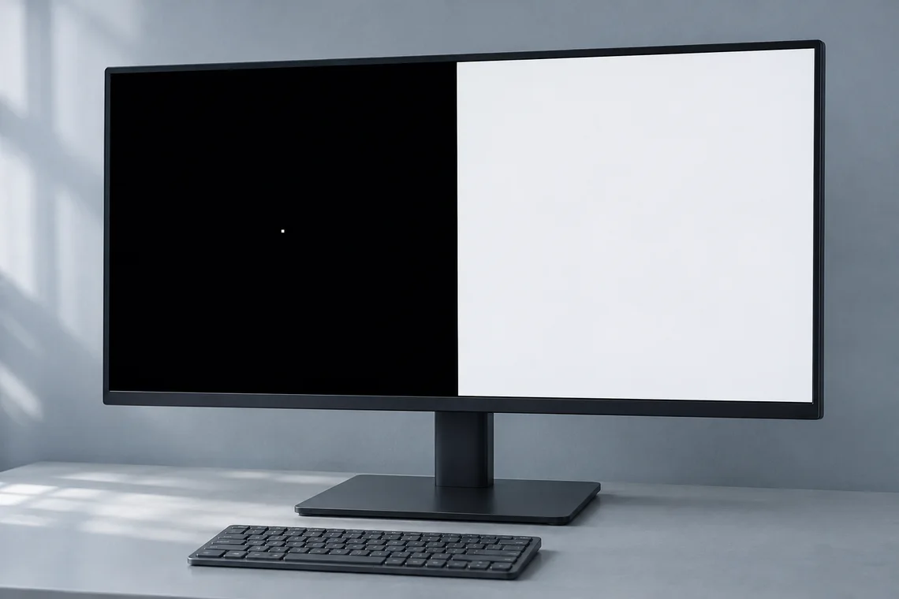

Biały ekran online
Sprawdź monitor na białym tle, użyj go do doświetlenia niewielkiego przedmiotu lub pobierz PNG.
Co to jest biały ekran online?
Biały ekran online pokazuje jednolite tło #FFFFFF w przeglądarce. Na jasnym polu łatwiej zauważyć ciemne punkty i przebarwienia. Obraz można też wykorzystać w projekcie lub prezentacji.
Zastosowania białego ekranu
Test ciemnych pikseli
Poszukaj małych ciemnych punktów. Jeśli coś zauważysz, sprawdź, czy punkt pozostaje na tym samym miejscu po zmianie koloru.
Porównanie jasności
Przy zwykłej jasności zmień biel na szarość i porównaj poszczególne części pola testowego.
Doświetlenie małego przedmiotu
Tablet z białym ekranem może dodać światła do zdjęcia z bliska. Ustaw natężenie światła jasnością urządzenia.
Jak sprawdzić ciemne plamki na białym tle
- Otwórz biały podgląd na wybranym ekranie z ustawieniami, których zwykle używasz.
- Sprawdź widoczną powierzchnię pod kątem punktów, przebarwień i różnic jasności.
- Porównaj te same miejsca na czerni i kolorach podstawowych. Sprawdź także, czy na powierzchni nie ma kurzu.
Użyj przycisku w prawym dolnym rogu podglądu, aby wyświetlić kolor na pełnym ekranie. Kliknij lub dotknij ekranu albo naciśnij Esc, aby wyjść.

Co sprawdzić na poszczególnych kolorach?
- CzarnyPoszukaj punktów, które stale świecą.
- BiałySprawdź ciemne punkty, plamy i różnice jasności.
- Czerwony, zielony i niebieskiPorównaj to samo miejsce na trzech kolorach podstawowych.
- SzaryZobacz, czy odcień jest równy na całej powierzchni testu.
Jak pobrać białe tło PNG
Wybierz Full HD do prezentacji, kwadrat do kompozycji 1080 × 1080 lub 4K UHD, jeżeli potrzebujesz pliku 3840 × 2160. Każdy piksel w pliku będzie biały.
| Format | Wymiary |
|---|---|
| HD | 1280 × 720 px |
| Full HD | 1920 × 1080 px |
| QHD | 2560 × 1440 px |
| 4K UHD | 3840 × 2160 px |
| Telefon | 1080 × 1920 px |
| Kwadrat | 1080 × 1080 px |
Częste pytania
Jak wyświetlić biel na telefonie?
Otwórz stronę w przeglądarce telefonu i wybierz biały kolor.
Jaki kod ma biały obraz?
Kolor białego PNG to #FFFFFF.
Czy ciemny punkt oznacza martwy piksel?
Ciemny punkt może też być zabrudzeniem. Sprawdź powierzchnię i porównaj kilka jednolitych kolorów.
Czy mogę zapisać białą tapetę na telefon?
Tak. Opcja Telefon tworzy pionowe PNG 1080 × 1920.
Jak regulować światło z białego ekranu?
Skorzystaj z ustawień jasności urządzenia lub przesuń ekran bliżej fotografowanego przedmiotu.